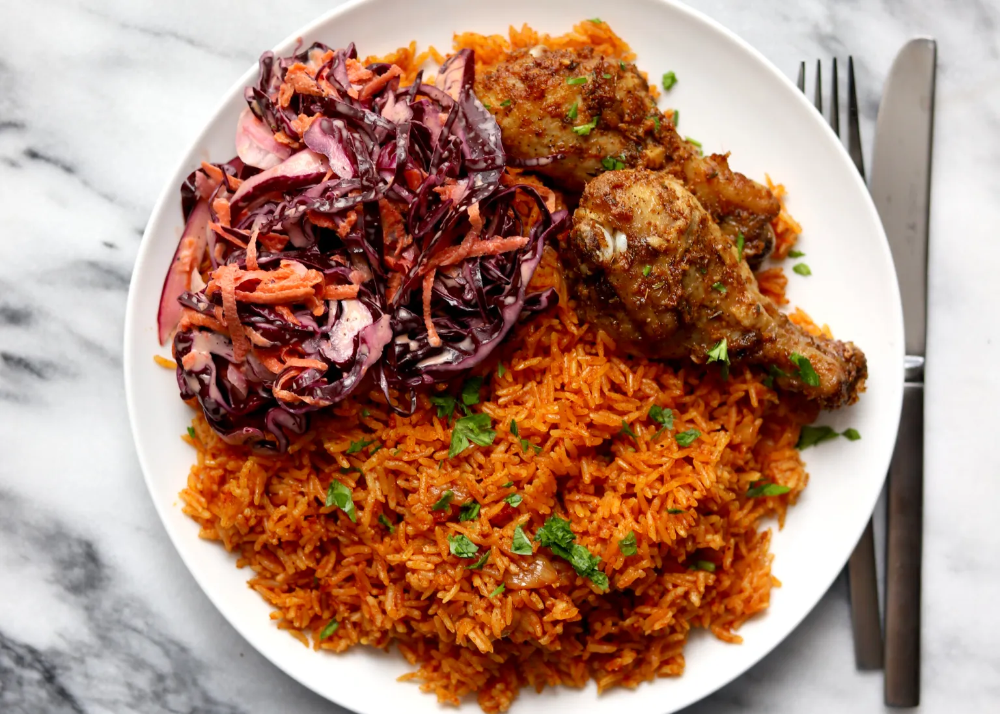

Baked Chicken, Jollof Rice & Coleslaw

Description
Jollof Rice is a popolar dish cooked with a mixture of rice and stew with
meat
Ingredients
Baked Chicken
- 10 chicken drumsticks
- 1 tsp salt
- 1 tsp onion powder
- 1 tsp garlic powder
- 1 tsp ginger powder
- 1 tsp paprika
- ½ tsp dried thyme
- 2 garlic cloves, minced
- 1 inch ginger, minced
- ¼ cup vegetable oil
Coleslaw
- 1 large carrot, shredded
- ½ red cabbage, thinly sliced
- ½ onion, thinly sliced
- 1 tbsp apple cider vinegar
- Pinch of salt
- Pepper to taste
- ¼–½ cup coleslaw dressing
Jollof Rice
- 2 large or 3 small tomatoes, blended
- ¾ - 1 cup oil
- 1 tbsp tomato paste
- 3 small onions (or ½ large), sliced
- 2 bay leaves
- 1 tbsp paprika
- 1 tsp each: onion powder, garlic powder, ginger powder
- 2 tsp curry powder
- 1 chicken bouillon cube
- 2 tsp salt
- Pinch of nutmeg
Blended Aromatics (for jollof)
- 1 small or ½ large onion
- ¾ cup crushed tomatoes
- 1 inch ginger
- 2 scotch bonnets or habaneros
- ½ bell pepper
- 2 garlic cloves
To Cook the Rice
- 5 cups jasmine rice
- 3-3½ cups water
Instructions
Baked Chicken
-
Place drumsticks in a bowl and add all dry seasonings, minced garlic,
and ginger.
- Mix thoroughly, cover, and marinate in the fridge for 1-3 hours.
-
Bake at 400°F (200°C) for 40 minutes until browned and cooked through.
Coleslaw
-
Combine shredded carrot, cabbage, onion, vinegar, salt, pepper, and
dressing in a bowl.
- Mix well, cover, and refrigerate for 30 minutes before serving.
Jollof Rice
-
Prepare all ingredients: slice onions, blend tomatoes and aromatics.
- Heat oil in a Dutch oven and sauté sliced onions for 5 minutes.
-
Add seasonings and tomato paste. Stir and cook for another 5 minutes.
-
Add blended tomatoes and simmer on low for 20 minutes until oil
separates.
- Add blended aromatics and simmer for another 30-40 minutes.
- Wash rice thoroughly until water runs clear, then drain.
- Add rice to stew and mix well until coated.
- Add water until it sits about 1 cm above the rice.
-
Cover tightly with foil and lid. Bake at 350°F (175°C) for 75 minutes.
-
Check doneness and stir in top layer of sauce. If undercooked, add ½ cup
water and bake 20 more minutes. If overcooked, bake uncovered for 15
minutes.